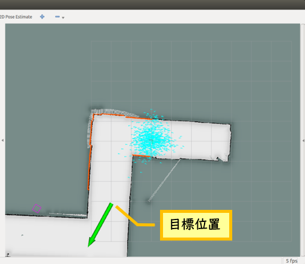

Nav2で自律走行させよう
ロボットの自律移動を行うためには、自己位置推定や移動経路のプランニングといった技術が必要です。
ROS 2ではNav2というパッケージでこれらの機能が提供されています。
Nav2はROS Navigation Stackの精神的後継のパッケージです。
ここでは、SLAM（slam-toolbox）サンプルを用いて作成した地図を使って、ライトローバーを目標地点まで自律的に移動させてみましょう。
平面で、オドメトリの誤差原因となるタイヤの滑りが少なく、分かれ道や柱の凹凸など、分かりやすい特徴が存在する通路といった環境でお試しください。
LiDARでは捉えられない高さに障害物があったり、イスやテーブルの脚といった小さな障害物が多く存在する環境では正常に動作させることが難しくなります。
また、電源はRaspberry PiのUSB Type-Cポートに接続することを強く推奨します。
バッテリーを使用する場合も、micro B to USB Type-Cの変換コネクタなどを使用するなどでRapberry Piの電源ポートを使用することで動作が安定します。
Nav2のセットアップ
まずは依存しているライブラリをインストールします。
sudo apt install ros-humble-joint-state-publisher ros-humble-xacro
次のコマンドでNav2をインストールします。
sudo apt install ros-humble-navigation2
sudo apt install ros-humble-nav2-bringup
エラーが出なければインストール終了です。
地図の作成と読み込み
まず、ロボットが移動する環境の地図を作成します。
自律移動を行うためには、できるだけ正確な地図が必要です。
また、launchファイルを編集し、作成した地図が読み込まれるようにします。
地図の作成と保存
SLAMをしようの手順に従って、地図の作成と保存を行ってください。
ここでは地図を「test1」という名前で保存し、「test1.pgm」と「test1.yaml」というファイルがホームフォルダに生成された、という前提で説明を続けます。
地図ファイルの移動
「test1.pgm」と「test1.yaml」を移動させます。
ファイルマネージャ等を用いて、2つのファイルを以下のアドレスにコピーまたは移動させてください。
/home/pi/ros2_ws/src/lightrover_ros2/lightrover_navigation/maps
初期状態であれば、test.pgmとtest.yamlという2つのファイルが存在しています。
「test1.pgm」と「test1.yaml」を加えて4つのファイルがある状態にしてください。

参考
あくまで説明のための表現です。実際には、使用したいマップのpgmファイルとyamlファイルの2つがあれば問題ありません。
launchファイルの編集
作成した地図が読み込まれるように、「lightrover_move_base_dwa.launch」を編集しましょう。
launchファイルをgeditで開きます。
gedit /home/pi/ros2_ws/src/lightrover_ros2/lightrover_navigation/launch/lightrover_navigation.launch.py
次の行を探し、“ファイル名.yaml”を、先ほど保存，移動させた地図ファイルのファイル名に合わせて設定します。
default=os.path.join(
get_package_share_directory('lightrover_navigation'),
'maps',
'ファイル名.yaml'))
例では「test1.yaml」ですので、次のようになります。
default=os.path.join(
get_package_share_directory('lightrover_navigation'),
'maps',
'test1.yaml'))
自律移動の実行
それではnavigationサンプルを実行して、ライトローバーに自律移動をさせてみましょう。 なお、環境によっては上手く自律移動できないことがあります。 その場合は、各機能のパラメータを調整いただくことで、改善する可能性があります。 サンプルプログラムではオドメトリの影響が小さくなるようパラメータを設定しています。
-
launchファイルの呼び出し
オドメトリの取得やLiDARの制御を行うノードをまとめたnav_base.launch.pyを実行します。
地図を作製したポイントにライトローバーを置き、下記のコマンドを実行してください。cd ~/ros2_ws/ . install/setup.bash sudo chmod 777 /dev/i2c-* sudo chmod 777 /dev/ttyUSB0 ros2 launch lightrover_ros nav_base.launch.pyNav2を実行します。
新しいターミナルを開いて下記のコマンドを実行してください。cd ~/ros2_ws/ . install/setup.bash ros2 launch lightrover_navigation lightrover_navigation.launch.py -
初期位置の設定
navigationサンプルの起動時、ライトローバーは地図の作成開始地点にあることになっています。
現実のライトローバーの位置とズレがある場合は、おおよその初期位置を教えてやる必要があります。
画面上部の「2D Pose Estimate」ボタンをクリックしてから、ライトローバーの実際の初期位置をクリックし、ドラッグして方向を決めます。

次に示すように、mapの壁や障害物と、LiDARの検出結果がおおよそ一致するようになるまで調整を行ってください。

このとき、指定したメカナムローバーの位置周辺に青い小さな点がいくつも散らばっていることが確認できます。
これらは、navigationスタック内で自己位置推定を担うノード「amcl」が計算する、ライトローバーの推定自己位置を示すパーティクルです。
動作開始前は自己位置が定まっていないため、青い点は広範囲に散らばっています。 -
目標位置の設定
初期位置の設定を完了したら、いよいよライトローバーの移動目標地点を設定します。
なお目標地点を設定すると、ライトローバーは即座に走行を開始しますので注意してください。
画面上部の「2D Nav Goal」ボタンをクリックしてから、目標位置をクリックし、ドラッグして方向を決めてください。

目標位置を設定すると、ライトローバーは即座に走行を開始します。
走行中のRvizの様子を下図に示します。
計画された移動経路が緑線で、目標位置姿勢が赤矢印で示されています。
また、検出されている障害物の周りには色が付いた領域が存在します。
これらは、観測結果をもとに数値化された衝突危険性を表すコストマップです。

-
走行の終了
ライトローバーは目標位置に到達すると、自動的に停止します。そこから新たに目標位置を設定することも可能です。